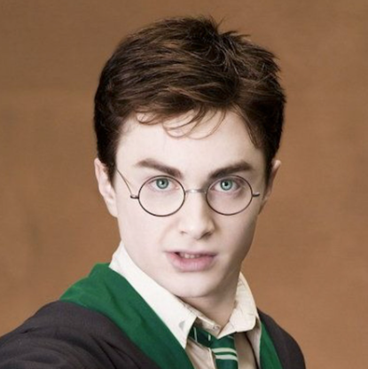

Albus Severus PotterAbout:1. Albus Severus Potter was born to Harry James Potter and Ginevra Molly Weasley on March 23 2006. 2. His siblings are James Sirius Potter and Lily Luna Potter. 3. He was sorted into Slytherin house when he first went to Hogwarts School of Witchcraft and Wizardry in 2017, at the age of 11. 4. His godparents Neville Frank Longbottom and Hannah Amelia Abott. 5. He is a half blood wizard. 6. He wasn't appointed as Prefect but he was appointed Head Boy in his 7th year and was also made Quidditch Captain for Slytherin in his 7th year. Characteristics: 1. Serious 2. Gives up easily 3. Careless Possesions: 1. Marauder's Map (stolen from James at some point of time and after James left Hogwarts) 2. Invisiblity Cloak (Given after James left Hogwarts) 3. A 14", Cherry Wood, Phoenix Feather Core Wand 4. Nimbus 2020 (broomstick) Other Details: Eye Colour - Bottle Green Hair Colour - Jet Black Height - 140cm (1st year) Height - 165cm (7th year) Species - Human Gender - Male Patronus - Mole Boggart - Delphini Riddle Quidditch Position - Seeker for Slytherin Favourite Colour - Green Nickname - Al Speciality - Parseltongue Later Life: Married To - Adelena Fluer Delacour Kids - Alexis Albus Potter (April 8, 2033), Dennis Severus Potter (July 11, 2034), Savanna Adelena Sunset Potter (October 18, 2036) Professions - Auror, Head of the Auror Department, Head of the Law Enforcement Notable Achievements - Order of Merlin 2nd class(Excellent performance as an auror) |
 |